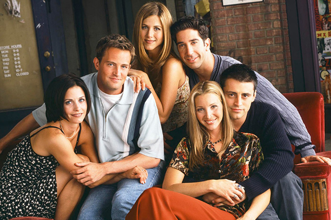
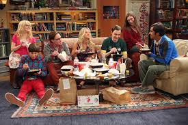

Gaming, especially with friends, is definetely one of my favourite hobbies; me and my friends mostly play Minecraft and we have a multiplayer server that we set up and play in.

I use cable to watch TV instead of NetFlix, and watching FRIENDS on TV has always been an entertaining activity for me- especially during quarantine. I also watch other shows like Brooklyn Nine-Nine and Big Bang Theory.
 
On YouTube, I watch a lot of gaming channels and a lot of content had been uploaded during the quarantine; therefore, there was always something new to watch every day.

Obviously, coding is one of my biggest interests and it has always felt less like work and more fun doing programming.